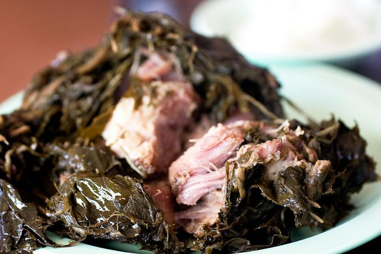

Laulau

Laulau is a traditional Hawaiian dish consisting of usually pork, chicken, fish, and various vegetables
wrapped in a
bundle of luau and tea leaves that is then steamed for several hours. Often served with rice,
lomi salmon, poi, and
other traditional Hawaiian side dishes for special occasions.
Ingredients
- Lu'au leaves
- Ti leaves
- Pork butt and/or pork belly
- Salted butterfish
- Okinawan sweet potato
- Carrots
- Hawaiian sea salt
Cooking Directions
- Prep two types of leaves. Wash them thoroughly and cut stems and main veins off. Leave out to dry.
- Stack luau leaves on your workstation and arrange them so that the biggest leaf is on the bottom
and the smallest leaf is on top.
- In the center of the leaves place a few chunks of pork butt and butter fish. Add 2-3 pieces of carrots and
Okinawan sweet potato. Add chopped luau leaf stems and sprinkle with Hawaiian salt.
- Use the luau leaves to fold and wrap the fillings in a tight bundle.
- Wrap ti leaves around the luau leaf bundles and use the stems to tie a topknot.
- Put wrapped laulau in a steamer. Steam for 3-4 hours until nice and tender. Remove the ti leaves and serve!
Return to homescreen